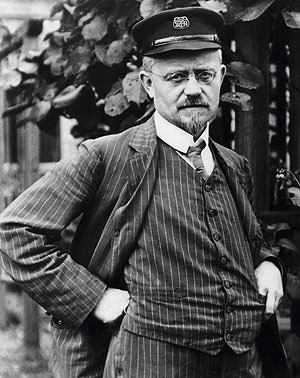

Audi品牌的身世、其實就隱含在它們的四環標誌之中，因為前身為Auto Union AG的Audi，是在1930年代初期、由Audi、DkW、Horch及Wanderer這四間公司，以四個銀環組成一起的意象合併而成，代表了彼此之間完美的合作，更有著「獨立自主、團結且群策群力」的象徵意義。但這個百年品牌的開始，得從Dr. August Horch在1899年時，成立A. Horch & Cie公司，並著手研發車輛開始說起。
以 Horch起家，成就於Audi
|  |
1868年誕生於德國西部Winningen的Dr. August Horch，由於家中經營著鐵匠的事業，所以他不但自幼便對機械結構充滿了濃厚的興趣，從Hochschule Mittweida (即今日德國Mittweida科技大學) 畢業之後，1896年、剛拿到工程系學位的他，便進入了Carl Benz (Mercedes-Benz創辦人之一) 的Benz & Co. Rheinsiche Gasmotoren-Fabrik Mannheim 引擎工廠工作；不過、顯然車輛製造經理一職並不能滿足Dr. August Horch想要自行生產汽車的願望，因此在1899年，他毅然決然地離開Carl Benz，於萊茵河畔的Koelner (科隆) 成立了A. Horch & Cie公司，並開始著手研發自製車輛。
歷經2年的研發，1901年、Dr. August Horch立刻展現了他的機械天分，打造出擁有4~5匹馬力輸出的Horch 4-5 PS Vis-à-Vis，且上市後大受歡迎，並接著又設計出搭載雙缸與4缸引擎的不同車款；而且還是德國第一家採用輕量化合金引擎及變速箱外殼的車廠，至此奠定輕量化與Audi的密不可分的關係。
隨著Horch車款的成功，Dr. August Horch將A. Horch & Cie改組成合資公司Horch & Cie. Motorwagen-Werke AG，但幾年後卻因為與合夥人意見相左而自立門戶，於1910年另行成立Horch Automobil-Werke GmbH。
然而，此時由於公司名稱在註冊時與Horch & Cie. Motorwagen-Werke AG產生了一些糾紛，所以Dr. August Horch索性將新公司的名稱改採「August」的拉丁字：「Audi」註冊、成立Audiwerke GmbH，而這也是Audi在車壇上的第一次現身。
沿用Horch為新公司註冊的挫折，並沒有對Dr. August Horch產生打擊，反而讓它決心以Audi之名更加茁壯。於是Audi接下來不但在1912至1914年間、在奧地利所舉行的Austrian Alpine Rally (奧地利阿爾卑斯山越野拉力) 賽事中，連續3年贏得象徵最高榮譽的「阿爾卑斯挑戰獎」、成為1920年代最負盛名的賽車製造廠。
四環結合，生生不息
但即使Audi在賽車及豪華房車市場都大有斬獲，Dr. August Horch卻仍然無法率領公司抵擋1930年代的全球性經濟危機；於是在1932年，為了因應時局的轉變，以製造豪華轎車而廣受市場喜愛的Audi，便找來了專精製造8缸引擎及賽車聞名的Horch、生產針織機起家的DKW，以及專精製造自行車與摩托車的Wanderer共四家公司，結盟成Auto Union AG，總公司設立於Chemnitz、由Dr. August Horch擔任監事，成為首家能夠攻佔所有消費族群的全能汽車製造廠。
成立於1907年的DKW、為Dampf kraft wagen (德文：蒸氣驅動的汽車) 的縮寫，註冊商標為一座噴發中的火山，但前身其實為一家紡織廠，直到1916年才開始進軍汽車生產市場，並於1919年研發出自有品牌的電動自行車與機車，而且公司名稱雖然仍是DKW，卻改為Dem knabe Wunsch (德文：男孩的渴望)。
2年後、DKW再次將公司名稱縮寫解釋為Das kleine Wunder (德文：小驚喜)，並全力投入機車的生產，於短短10年間便成為當時世界上生產規模最大的機車廠之一；1928年、DKW開始設計汽車、1930年打造出著名的DKW 4=8，1933年時、更透過與Audi等品牌的結盟和協助，開發出全球第一輛前置引擎、前輪驅動 (FF) 配置的量產車：Front UW，樹立汽車歷史上相當重要的里程碑。
至於Wanderer，雖然在知名度上遠不及同屬四環聯盟的Horch、Audi和DKW，但Wanderer卻是其中最早成立的公司、創始於1885年，最初的產品則為自行車，且1913年便設計出第一款車：W 3，並曾經請來Porsche創辦人、天才工程師Dr.Ferdinand Porsche替它們操刀，設計出兩款6缸引擎，搭載在著名的W 25 K雙門跑車之上、名聞一時。
1932年、結合Audi、Horch、DKW與Wanderer四家公司而成的Auto Union AG正式成立後，也設計了它們的新廠徽：以四個銀色的圓環互相交疊、環中間加上「AUTO UNION」字樣，象徵四個品牌緊緊相連、生生不息。
戰火後重生，科技的Audi
合併之後，雖然讓Auto Union AG下的各個品牌銷售倍增，可惜隨著第二次世界大戰的到來，Auto Union AG也不得不成為納粹的軍火工廠，並於1944年遭受盟軍地毯式的轟炸，逼得希特勒只得下達「焦土政策」，讓所有工廠付之一炬，也等於宣告了Auto Union AG的結束。
不過，1949年9月、Auto Union AG終於在Ingolstadt開啟了重生之路，以生產機車與小型車為主，且沿用了之前的廠徽設計，期望能恢復Auto Union AG過去的榮光，並於1954年正式開始獲利，其中還曾於1957至1966年間、短暫地與Daimler-Benz (即今天Mercedes-Benz的前身) 結盟。
1969年3月、Auto Union AG和Volkswagen持有多數股份的NSU Motorenwerke AG汽車公司整合，合組Audi NSU Auto Unio AG公司，總部設立在Neckarsulm，正式成為Volkswagen集團旗下的一員；而在NSU Motorenwerke AG的加入後，整個集團不但更豐富、多元，營業範圍亦更加茁壯，Audi NSU Auto Unio AG公司也在數年後正式定名為大家所熟知的Audi AG。
然而，綜觀Audi百年歷史，無論是第一款量產車The first Horch，或是2011年IAA德國法蘭克福車展上才推出的Urban Concept及Urban Concept Spyder概念車，Audi從來都沒有吝嗇於搭載最新的科技。
因為其實早在Audi成立之初，就是以創新科技風靡車壇，除了1933年設計出全球第一輛前置引擎、前輪驅動 (FF) 設定的Front UW外，1934年更在Dr.Ferdinand Porsche的協力下、開發出第一款中置引擎賽車：Auto Union Type A，成功將車身重心比例設定為50：50，還率先倡導車輛安全撞擊測試與空氣力學測試的重要性，且首次將quattro智慧型恆時四輪驅動系統運用在量產雙門轎跑車與4門房車之上。
1970年代後，Audi更將品牌宣傳標語改為「Vorsprung durch Technik (進化科技 定義未來)」，至此奠定品牌的走向與特色，也讓這個由四個銀色圓環所組成的德國百年品牌，在車壇更穩固了屬於自己的一席之地，並繼續邁向擁有無限可能的未來。


-

灌注賽道精神-認識Audi Sport品牌
提到Audi當家超跑R8，相信沒有人會忽略它的存在，Audi憑什麼打造出這世界上首屈一指的超跑呢？答案就在Audi Sport GmbH工廠裡；這裡就像一座神聖殿堂...
-

純粹的賽道魂魄-Audi RS家族車款介紹
Audi旗下性能最強悍的兵團，就屬R8及RS Models家族車款，為求最完美的性能表現，這些車款均交由Audi Sport GmbH工廠製作，未來還會導入RS4 Avant、RS5 Coupe及TT RS三款...
-

舒適與性能，諧和共存-Audi S家族車款介紹
許多人渴望擁有性能，但程度上因人而異，前一篇介紹的Audi RS家族車款是為極度熱血份子所打造，至於那些想要兼顧日常實用與舒適性...